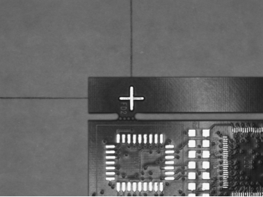
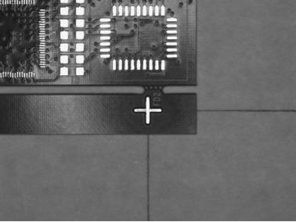

Công cụ Xoay & Lật ảnh chủ yếu được sử dụng để thực hiện các phép biến đổi xoay và lật đối xứng trên ảnh đầu vào.


| Phân loại | Tên tham số | Mô tả tham số |
|---|---|---|
| Cửa sổ thuộc tính | Kiểu xoay | Xoay ảnh gốc ngược chiều kim đồng hồ một góc nhất định, chia làm 4 loại góc: 0 độ, 90 độ, 180 độ và 270 độ. |
| Kiểu lật | Thực hiện thao tác lật đối xứng trên ảnh gốc, chia làm 4 loại: Không, Ngang, Dọc và Ngang & Dọc. | |
| Là ảnh màu? | Ảnh đầu vào có phải là ảnh màu hay không. | |
| Cửa sổ hình ảnh | Ảnh đầu vào | Hiển thị hình ảnh chờ biến đổi. |
| Liên kết dữ liệu | Ảnh đầu vào | Đầu vào là ảnh xám chờ biến đổi. |
| Ảnh màu đầu vào | Đầu vào là ảnh màu chờ biến đổi. | |
| Giao diện nâng cao | Không | Không |
| Phân loại | Tên tham số | Mô tả tham số |
|---|---|---|
| Cửa sổ giám sát | Ảnh đầu ra | Xuất ra chiều rộng, chiều cao, kích thước pixel của ảnh xám. |
| Ảnh màu đầu ra | Xuất ra chiều rộng, chiều cao, kích thước pixel của ảnh màu. | |
| Kết quả thực thi | Kết quả thực thi của công cụ. | |
| Thời gian thực thi | Thời gian thực thi của công cụ. | |
| Cửa sổ hình ảnh | Ảnh đầu ra | Hiển thị hình ảnh kết quả thực thi của công cụ, giống tham số ảnh đầu ra trong Cửa sổ giám sát. |
| Kết quả thực thi | Hiển thị kết quả thực thi công cụ, thành công hiện "OK", thất bại hiện "NG", giống tham số kết quả thực thi trong Cửa sổ giám sát. | |
| Liên kết dữ liệu | Ảnh đầu ra | Xuất ra ảnh xám sau khi xoay, cung cấp cho các công cụ khác sử dụng. |
| Ảnh màu đầu ra | Xuất ra ảnh màu sau khi xoay, cung cấp cho các công cụ khác sử dụng. |
Không
Không
参见“\Samples\旋转镜像工具.gvp”。